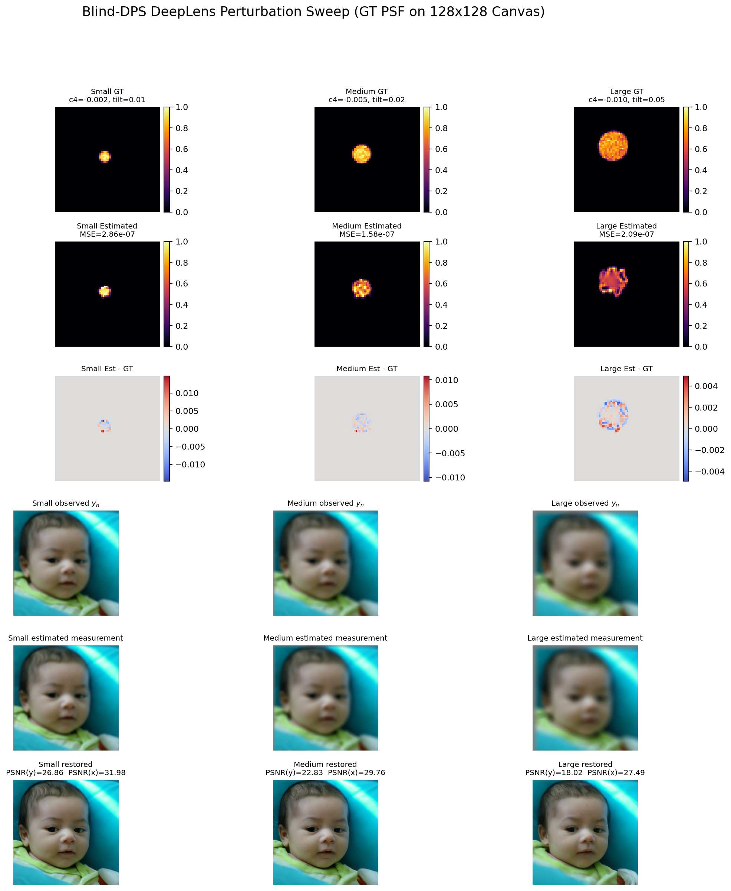
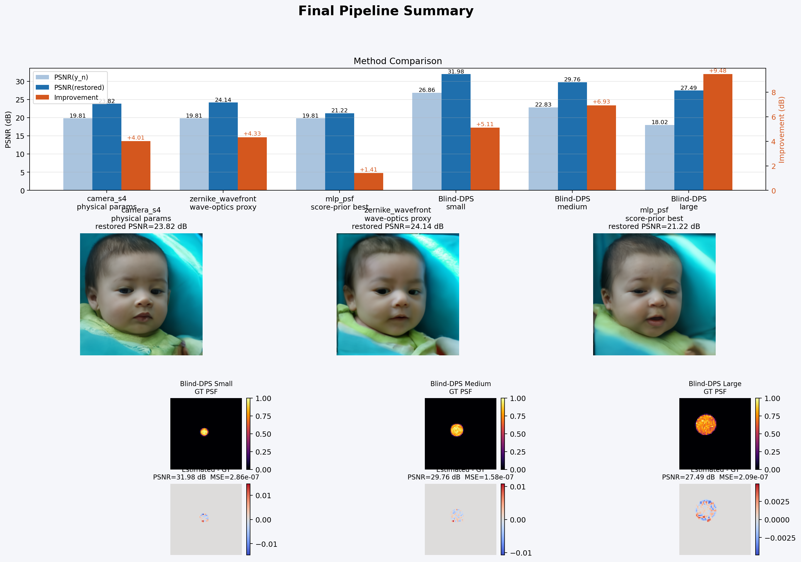
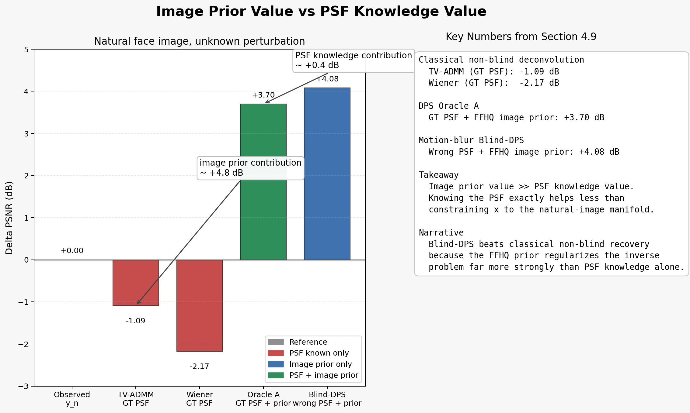
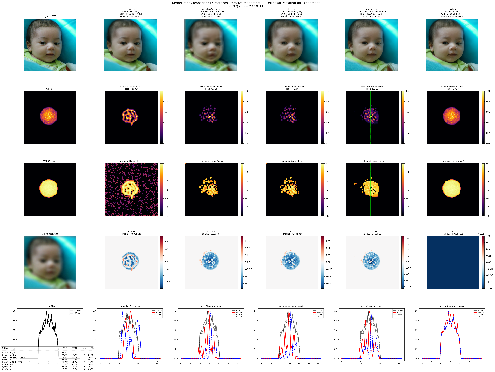
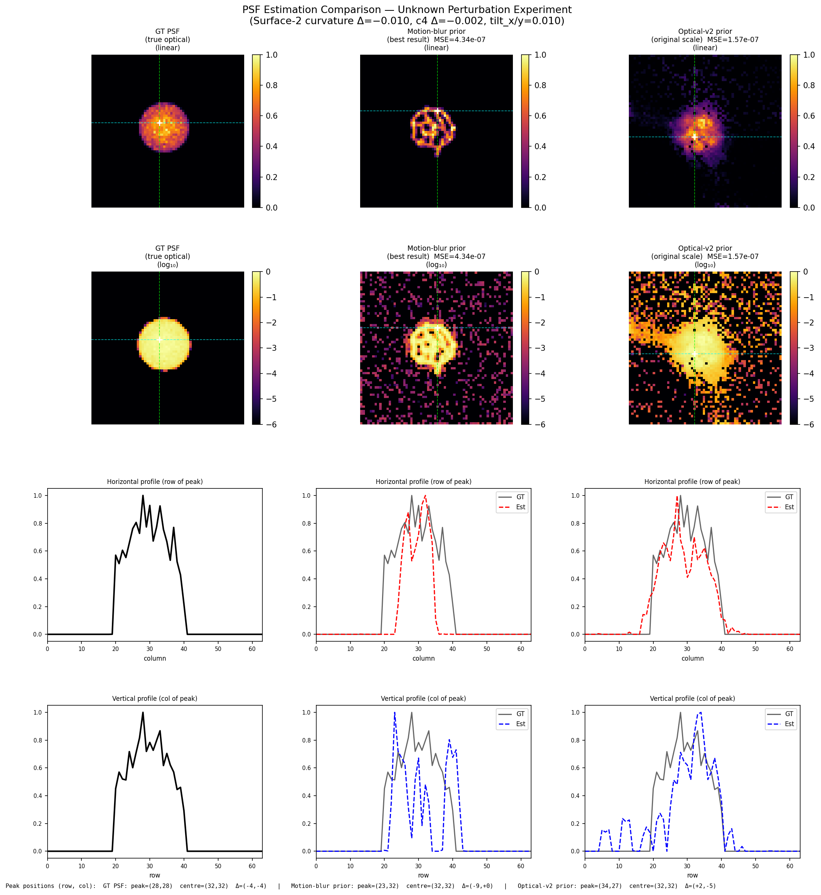
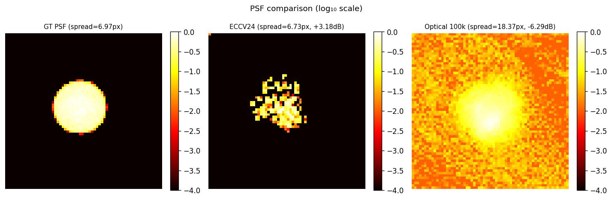
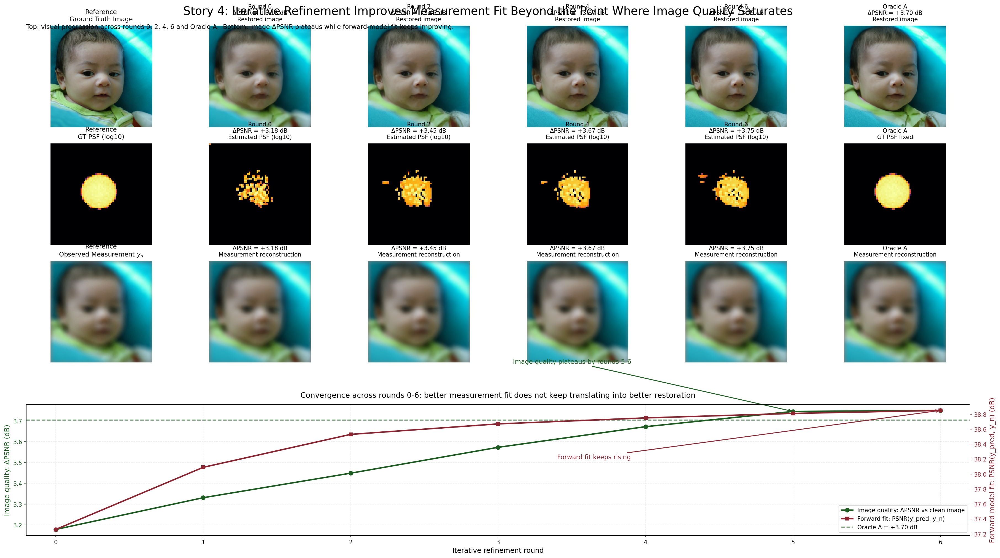
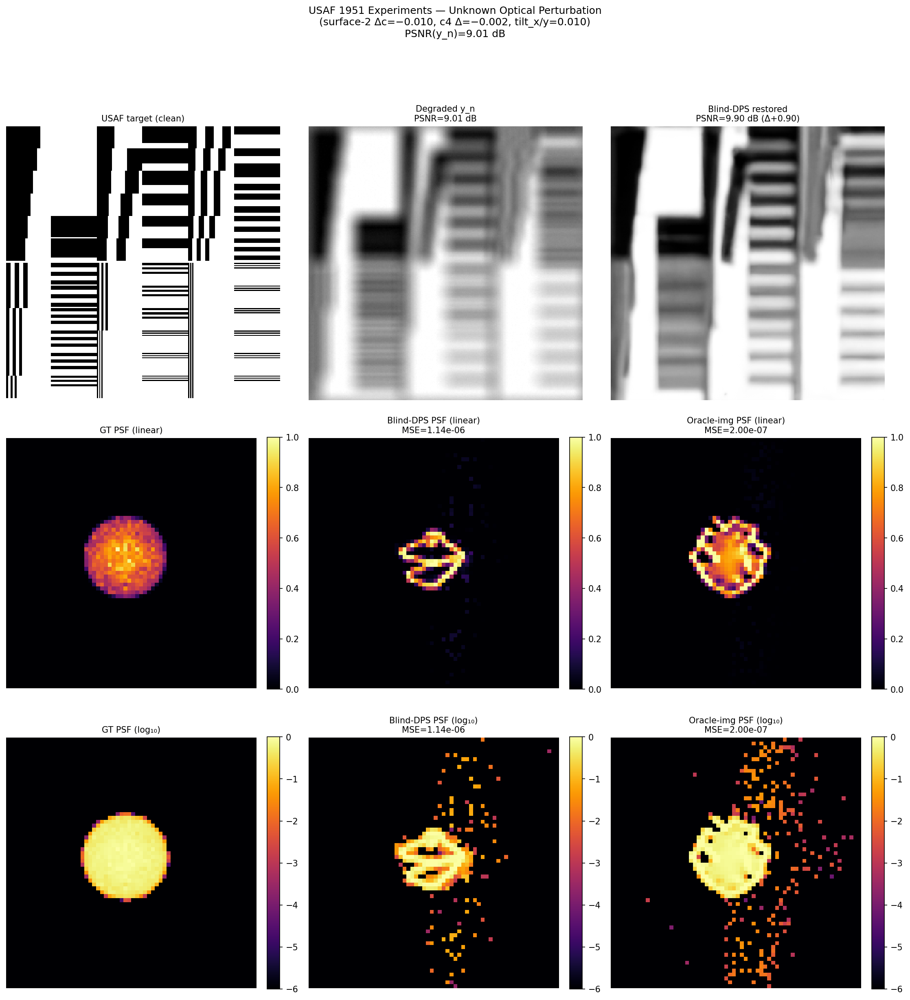
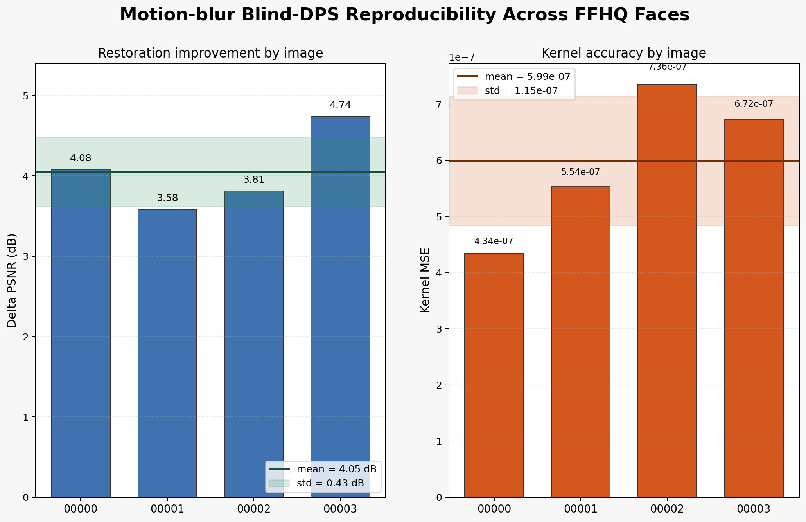

The six empirical stories
The project is easiest to understand as six linked findings. Each story combines the main observation, the supporting numbers, and the interpretation that matters for inverse problems and computational imaging.
Self-calibration works under unknown perturbation
Blind restoration succeeds even though the true perturbation lies outside the recoverable physical parameterization.
The best in-family physical method, Camera-S4 self-calib, reaches
22.74 dB or Delta PSNR = -0.36 dB. By contrast,
Motion-blur Blind-DPS reaches 27.18 dB or
+4.08 dB. The useful target is therefore not the exact physical lens state
but a PSF estimate that helps restoration.


Image prior value is much larger than PSF knowledge value
TV-ADMMwith GT PSF:-1.09 dBWienerwith GT PSF:-2.17 dBOracle Awith GT PSF + FFHQ image prior:+3.70 dBMotion-blur Blind-DPSwith a wrong PSF family + FFHQ image prior:+4.08 dB
The jump from the best classical non-blind method to Oracle A is roughly
+4.79 dB. The gap between Oracle A and the best blind result is only about
0.38 dB. In this regime, image-manifold information dominates exact kernel
knowledge.

The domain-specific optical PSF prior is harmful in joint blind sampling
Motion-blur Blind-DPS:+4.08 dB,4.34e-07kernel MSEOptical-v2 Blind-DPS:-2.24 dB,1.57e-07kernel MSE
The optical prior gets a lower kernel MSE but a much worse image. The joint chains enter a feedback loop:
diffuse k -> blurry x -> lower residual for diffuse k -> even more diffuse k
A narrow but wrong prior is worse than a broad but weakly regularizing one when the measurement term is shared by both chains.



The iterative refinement ceiling is set by image model quality
Alternating refinement improves the hybrid pipeline, but only up to a hard ceiling around
+3.75 dB.
Starting from the ECCV24 kernel, the result improves from +3.18 dB to
+3.75 dB. Starting from the much better optical 40k seed still ends at
+3.75 dB, even though the kernel MSE improves to 9.22e-08.
Once the kernel is accurate enough, the bottleneck is the image prior.

A natural image is a poor PSF calibration target in the observability sense
Blind-DPSon USAF:+0.90 dB,1.14e-06kernel MSEOracle A -- USAF target:PSNR(y_n) = 9.01 dB,PSNR(restored) = 10.49 dB,Delta PSNR = +1.48 dB
The FFHQ image prior is mismatched to binary edge patterns, so even the oracle result on
USAF trails the natural-image oracle by 2.22 dB. Subtle PSF differences
live in high spatial frequencies, but the blur destroys exactly those frequencies.

Motion-blur Blind-DPS is robust across images
00000.png:+4.08 dB,4.34e-0700001.png:+3.58 dB,5.54e-0700002.png:+3.81 dB,7.36e-0700003.png:+4.74 dB,6.72e-07
The mean is +4.05 dB with standard deviation 0.43 dB. Kernel
MSE is also consistent, with mean 5.99e-07 and standard deviation
1.15e-07. The best result is therefore representative rather than lucky.
